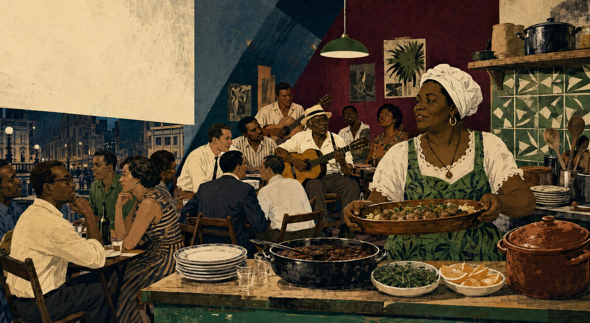

Zicartola: vinte meses que mudaram o mapa do samba
A cozinha de Dona Zica e a música organizada por Cartola transformaram um sobrado do Centro do Rio num encontro improvável — e decisivo — entre gerações, territórios e projetos culturais.
Neste artigo
O que foi o Zicartola?
O Zicartola foi um restaurante e casa de samba criado por Dona Zica e Cartola na Rua da Carioca, 53, no Centro do Rio. Aberto ao público em fevereiro de 1964 e vendido pelo casal em julho de 1965, reuniu sambistas veteranos, jovens músicos, estudantes, jornalistas e artistas. Ali, comida e música ajudaram a aproximar diferentes territórios da cidade e a preparar alguns dos movimentos culturais mais importantes daquele período.
Antes da porta abrir, havia a cozinha de Zica
A história costuma começar com Cartola de chapéu e violão. É uma imagem compreensível, mas incompleta. Antes de existir um palco, havia o trabalho de Euzébia Silva do Nascimento, Dona Zica: a experiência aprendida em família, aperfeiçoada em cozinhas profissionais e transformada em meio de sustento.
Na virada dos anos 1950 para os 1960, Zica já era conhecida pela comida que servia nas reuniões de sambistas. Quando o casal passou a viver num sobrado da Rua dos Andradas, onde funcionava a Associação das Escolas de Samba, a cozinha ganhou outro alcance. Ela preparava refeições, vendia marmitas e atendia trabalhadores da região central do Rio.
O restaurante, portanto, não surgiu apenas porque alguém percebeu que seria interessante pôr Cartola diante de um público. A pesquisa do historiador Rodolfo Teixeira Alves mostra que Zica vinha construindo havia anos um projeto de autonomia por meio da culinária. O investimento dos futuros sócios tornou possível um desejo que já existia.
Essa mudança de ponto de vista importa. Zica não aparece como ajudante do compositor famoso. Ela é cozinheira, empresária e anfitriã de um espaço que levaria também o seu nome.
Rua da Carioca, 53
Em 5 de setembro de 1963, Zica assinou o contrato de sociedade com Eugênio Agostini Xavier Neto e seus primos. O sobrado escolhido ficava no número 53 da Rua da Carioca, perto da Praça Tiradentes, numa região de teatros, comércio, gafieiras e intensa circulação de trabalhadores.
As obras demoraram mais do que o previsto. A inauguração para convidados aconteceu na noite de 21 de fevereiro de 1964; na segunda-feira seguinte, dia 24, o restaurante abriu ao público. Durante o almoço, predominavam as refeições caseiras. À noite, violões, vozes e conversas ocupavam o salão apertado.
O endereço logo despertou curiosidade. Não era uma boate luxuosa nem uma casa de espetáculos convencional. Conservava algo da pensão, do almoço de trabalhadores e da roda de amigos — ao mesmo tempo que cobrava entrada em algumas noites e remunerava músicos.
Uma cidade que se encontrou à mesa
O Rio de Janeiro que subia aquelas escadas não era um só. Sambistas ligados à Mangueira e a outras escolas encontravam jovens da Zona Sul, estudantes, jornalistas, gente do teatro e da política. Mestres pouco presentes no mercado fonográfico voltavam a ser ouvidos diante de um público novo.
Cartola, Carlos Cachaça, Nelson Cavaquinho, Zé Kéti, Elton Medeiros e Nelson Sargento estão entre os nomes associados às noites da casa. Nara Leão, Hermínio Bello de Carvalho, Ferreira Gullar, Vianinha, Sérgio Cabral e outros frequentadores ajudavam a ligar aquele salão a projetos que ganhariam os palcos.
Chamar isso apenas de “encontro entre o morro e o asfalto” facilita a imagem, mas esconde as diferenças. Havia admiração e colaboração; havia também disputa sobre quem podia representar o samba, o que seria “autêntico” e como a cultura popular seria recebida por jovens de classe média. Alguns cronistas da época criticaram abertamente essa aproximação.
O valor do Zicartola está justamente aí: não em apagar fronteiras sociais, mas em permitir que elas fossem atravessadas, negociadas e, por vezes, confrontadas dentro do mesmo salão.
Mestres, novatos e o primeiro cachê
O Zicartola ofereceu visibilidade a compositores que a indústria do disco ainda tratava de maneira irregular. Mas a casa não vivia somente de reencontros. Ela também abriu espaço para uma geração que começava a formar sua linguagem.
O caso mais lembrado é o de Paulinho da Viola. Levado ao restaurante por Hermínio Bello de Carvalho, o jovem músico passou a acompanhar artistas e recebeu ali, de Cartola, seu primeiro cachê profissional. Mais tarde integraria A Voz do Morro, conjunto formado por músicos ligados à casa.
Esse detalhe explica muito da importância do lugar. Um sambista mais velho, ainda distante do reconhecimento amplo que teria na década seguinte, remunerava um artista de 21 anos que se tornaria um dos grandes compositores brasileiros. O encontro não era uma fotografia do passado. Produzia futuro.
Também foi naquele circuito que nomes como Nelson Sargento e Elton Medeiros ampliaram suas relações artísticas. As apresentações aproximaram parceiros, jornalistas, produtores e públicos que dificilmente se encontrariam com a mesma frequência em outro endereço.
Quando 1964 entrou no salão
O restaurante abriu pouco mais de um mês antes do golpe civil-militar de 31 de março de 1964. A partir dali, arte e política passaram a dividir a noite com urgência ainda maior. Integrantes do meio estudantil e teatral, alguns ligados ao Centro Popular de Cultura da UNE, encontraram no samba uma linguagem para pensar o país.
O Zicartola tornou-se ponto de convivência de artistas e intelectuais contrários à ditadura. Isso não significa que todas as noites fossem reuniões políticas ou que os sambistas compartilhassem uma única posição. Significa que, naquele ambiente, repertórios populares, debates culturais e projetos de resistência puderam se tocar.
O Show Opinião, lançado em dezembro de 1964 com Zé Kéti, João do Vale e Nara Leão, nasceu desse campo de aproximações. O espetáculo Rosa de Ouro, idealizado por Hermínio Bello de Carvalho e estreado em 1965, também se relaciona à rede de artistas que circulava pela casa. O mesmo vale para o grupo A Voz do Morro.
Por que o Zicartola fechou?
O sucesso cultural não garantiu equilíbrio financeiro. Contas não pagas e cheques sem fundo esvaziaram o caixa. A saída dos sócios deixou o casal com responsabilidades maiores. Parte do público que havia transformado o restaurante em novidade migrou para outros lugares, enquanto as despesas continuavam.
Havia ainda o custo do trabalho. Zica e Cartola, ambos com mais de cinquenta anos, dormiam pouco e sustentavam uma rotina pesada entre almoço, cozinha, administração e música. A pressão afetou a saúde de Zica.
No fim de julho de 1965, o estabelecimento foi vendido a Jackson do Pandeiro. A casa continuou por algum tempo sob outra direção, já transformada, mas não recuperou a força anterior. Por isso, as datas aparecem de formas diferentes nas narrativas: o projeto conduzido por Zica e Cartola terminou em julho; o endereço ainda funcionou por alguns meses.
Reduzir o encerramento à suposta “falta de tino comercial” do casal também seria injusto. A documentação mostra uma combinação mais complexa: capital insuficiente, desorganização societária, inadimplência de clientes, mudança de público e esgotamento físico.
O que permaneceu depois da porta fechar
A primeira vida do Zicartola foi curta. Ainda assim, a experiência reapareceu em shows, casas de samba e projetos que tentaram reproduzir aquela combinação de proximidade, comida e música. O próprio nome voltou em espetáculos durante os anos seguintes.
Mais importante: vários artistas que se encontraram no sobrado seguiram construindo o repertório musical e teatral da década. Paulinho da Viola iniciou ali sua profissionalização; A Voz do Morro reuniu uma nova geração; Opinião e Rosa de Ouro ampliaram o espaço do samba no palco.
Para Cartola, o reconhecimento amplo ainda demoraria. Seu primeiro álbum solo seria lançado apenas em 1974, quase dez anos depois. Para Dona Zica, a cozinha continuou sendo trabalho, identidade e forma de participação no mundo do samba — embora muitas narrativas posteriores tenham reduzido essa dimensão.
Talvez o legado mais atual do Zicartola seja lembrar que a cultura não nasce apenas no palco. Ela depende de quem abre a porta, prepara a mesa, cria condições de permanência e reconhece um artista antes que o mercado o reconheça.
Linha do tempo do Zicartola
Dona Zica prepara refeições na Rua dos Andradas e vende marmitas no Centro do Rio.
É firmado o contrato da sociedade que viabiliza o restaurante na Rua da Carioca, 53.
O Zicartola é inaugurado para convidados e, depois, aberto ao público.
A casa aproxima sambistas, estudantes, jornalistas e artistas num país recém-entrado na ditadura.
As redes do restaurante alimentam projetos como Opinião, A Voz do Morro e Rosa de Ouro.
Zica e Cartola vendem o estabelecimento; o endereço segue por alguns meses sob outra direção.
Perguntas frequentes sobre o Zicartola
Quem criou o Zicartola?
O restaurante foi criado por Dona Zica e Cartola, com investimento inicial de Eugênio Agostini Xavier Neto e seus primos. A pesquisa histórica mostra que o projeto de viver profissionalmente da culinária já vinha sendo amadurecido por Zica antes da sociedade.
Onde ficava o Zicartola?
Na Rua da Carioca, número 53, no Centro do Rio de Janeiro, perto da Praça Tiradentes.
Quanto tempo o Zicartola funcionou?
A casa de Zica e Cartola abriu ao público em 24 de fevereiro de 1964 e foi vendida no fim de julho de 1965 — cerca de dezessete meses. O estabelecimento continuou por mais algum tempo sob nova direção; daí a referência frequente ao período geral de 1963 a 1965 ou a aproximadamente vinte meses.
Quem frequentava o Zicartola?
Sambistas como Carlos Cachaça, Nelson Cavaquinho, Nelson Sargento, Zé Kéti e Elton Medeiros conviveram ali com jovens músicos, estudantes, jornalistas, intelectuais e artistas de teatro. Paulinho da Viola recebeu na casa seu primeiro cachê profissional.
A ditadura fechou o Zicartola?
Não há indicação de fechamento por ordem do regime. O Zicartola foi um espaço importante de articulação cultural no começo da ditadura, mas seu encerramento decorreu principalmente de problemas financeiros e societários, mudança do público e exaustão de Zica e Cartola.
Por que o Zicartola foi importante?
Porque aproximou gerações e públicos, deu trabalho e visibilidade a sambistas, ajudou a profissionalizar novos músicos e serviu de ponto de encontro para projetos que marcaram a música e o teatro brasileiro dos anos 1960.
Fontes consultadas
- Itaú Cultural — “Nós dois”, Ocupação Cartola. Texto e documentação sobre Dona Zica, Cartola e o restaurante.
- Rodolfo Teixeira Alves — “Meu samba é bife e feijão com arroz”. Artigo acadêmico sobre o Zicartola e a arte culinária de Dona Zica, publicado na revista Campos.
- IPHAN — Dossiê das Matrizes do Samba no Rio de Janeiro. Referência oficial sobre a casa e sua relação com diferentes gerações do samba.
- CASTRO, Maurício Barros de. Zicartola: política e samba na casa de Cartola e Dona Zica. Rio de Janeiro: Relume Dumará, 2004.
- Dicionário Cravo Albin da Música Popular Brasileira — Cartola. Cronologia e contexto biográfico.
Nota editorial: as datas e explicações foram confrontadas entre fontes institucionais, pesquisa acadêmica e registros de imprensa citados pelos pesquisadores. Quando a documentação permite interpretações diferentes — especialmente sobre a duração da casa — o texto explicita a diferença em vez de apresentar uma precisão artificial.